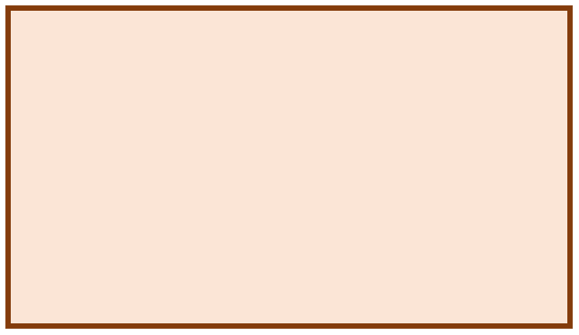
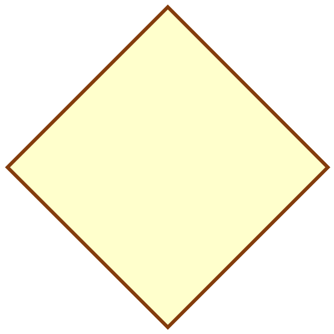
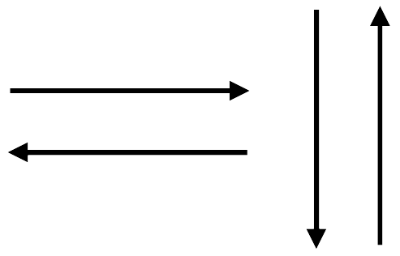

5. Sınıf Matematik · 2. Tema

⚙️ Temel Aritmetik İşlemlerde Algoritmalar
MAT.5.2.4. Temel aritmetik işlem içeren durumlardaki algoritmaları yorumlayabilme
MAT.5.2.4. Temel aritmetik işlem içeren durumlardaki algoritmaları yorumlayabilme
Günlük hayatta yemek tarifi, bir yere gitmek için izlenen yol veya bir işlemi adım adım yapma biçimi algoritmik düşünmeye örnektir. Matematikte de dört işlem içeren durumları belirli adımlarla ifade edebiliriz.
Adımlar günlük ve anlaşılır cümlelerle anlatılır.
“Başla, gir, hesapla, yazdır, bitir” gibi düzenli komutlarla ifade edilir.
Adımlar geometrik semboller ve oklarla gösterilir.
Örneğin 700 gramlık bir ürünün fiyatı 35 TL ise aynı birim fiyat korunarak 1 kilogramın fiyatı bulunabilir.
1 kg = 1000 g olduğundan:
Bölme işlemi, bazı durumlarda aynı miktarı tekrar tekrar çıkarma olarak modellenebilir.
Örneğin 20'nin içinde kaç tane 4 olduğunu bulmak için 20'den 4'ü ardışık olarak çıkarırız.
Bir algoritmayı okurken üç soruyu sor: Ne giriliyor? Hangi işlem yapılıyor? Sonuç nasıl veriliyor?
 BAŞLA
BAŞLA 700 g fiyatını gir
700 g fiyatını gir
Gram başına fiyatı hesapla Sonucu yazdırBİTİR
Sonucu yazdırBİTİRBir dikdörtgenin alanını bulma durumunu, bu sınıf düzeyinde değişken kavramına girmeden adım adım ifade edebiliriz.
Bu algoritmada tekrarlanan eylem 4 çıkarmaktır. Kalan 0 olduğunda işlem tamamlanır.
Sözde kod, gerçek bir programlama dili değildir; algoritmanın adımlarını düzenli ve kolay okunur biçimde ifade eder.
| Adım | Yapılan işlem | Matematiksel ifade |
|---|---|---|
| 1 | Fiyatı al | 35 TL / 700 g |
| 2 | Gram fiyatını bul | 35÷700 |
| 3 | 1000 g için hesapla | (35÷700)×1000 |
| 4 | Sonucu yazdır | 50 TL |
Akış şeması, bir algoritmayı şekillerle anlatmanın görsel yoludur. Her şekil belirli bir görevi temsil eder; oklar ise adımların hangi sırayla ilerlediğini gösterir. Bu nedenle işlem türüne uygun sembolün seçilmesi önemlidir.
Başlangıç ve bitiş için kullanılır.
Veri girişi için kullanılır. Klavyeden ya da başka bir kaynaktan bilgi alma adımlarını gösterir.
İşlem / talimat adımını gösterir. Toplama, çıkarma gibi işlemler burada yer alır.

Karar adımında kullanılır.
Örneğin Evet / Hayır seçimleri.
Sonucu yazdırma veya çıktı üretme adımını gösterir.

Şekillerden ayrı olarak akışın yönünü ve işlem sırasını gösterir.
20 sayısının içinde kaç tane 4 olduğunu, 4'ü tekrar tekrar çıkararak buluruz. Kalan sıfır olana kadar bu işlem tekrarlanır; kalan sıfır olduğunda kaç kez çıkarıldığı yazdırılır. Burada karar verildiği için eşkenar dörtgen kullanılır.
BAŞLAKaç kez çıkarıldığını yazdırBİTİR